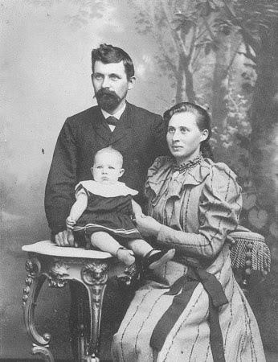

Monday, February the 20th, 2017
back to: title, date or indexes
I stumbled upon Borp shortly after Himmelfarb. It was my good fortune to have an emotional cushion. I had prayed for a pillow, but I got a cushion, so I could not complain. There was old black and white footage of Lasse Viren on the box. I thought I spotted Borp behind the box. This was not something I expected, and it caused those tremors I thought had gone forever, like the Gurglings.
There were Gurglings now, but they seemed to come from Borp. I was minded to take a closer look, but a little voice in my head urged caution. Lasse Viren continued to pound along the track, like a nonfiction Bobnit Tivol. I turned the sound down, the better to hear Borp. There were definite Gurglings.
Interrupted by a whistling kettle, I decamped to the kitchen. Well, I ought properly say kitchenette, if not kitchenettette. It was tiny. The kettle was correspondingly tiny too. But the whistle! It was so loud that it drowned out the Gurglings. This was a small mercy, and I was reluctant to remove the kettle from the hob. Had I tried to do so, it would in any case have been held fast by the hobgoblins.
I had been trying to eradicate these from my kitchenettette since before Himmelfarb. There was a spray, but it did little good. On the advice of Baines I fashioned a crucifix from stalks of rhubarb and suspended it from a rafter with a chain. Nobody told me Baines was a cretin.
I whirled about in the kitchenettette trying to work out what to do next. Outside, a crow landed on the lawn. Then another, and another. Soon there were so many crows I could no longer see the grass. I felt sure this had somehow been contrived by Borp, even if I had absolutely no idea how or why. I tried to concentrate my mind on Himmelfarb.
I summoned up what faint courage I had and returned to the parlour to peek behind the box. Lasse Viren had vanished from the box, to be replaced by Emil Zatopek, who was running in a different direction. He looked like a man wrestling with an octopus on a conveyor belt. I know that is not an original observation, but it had never seemed more true. I gawped and almost forgot about Borp. But then the sound of the Gurglings snapped me back to the present. What use were athletics to me now?
Then another question forced itself into my brain. Why were the crows on the lawn silent? Should they not have been cawing? That is two questions. It is no surprise that I dithered. I had dithered on Himmelfarb, had I not?, and look where my dithering got me. Beset by kitchenettette hobgoblins, and with only a useless spray and a rhubarb crucifix to counter them! Baines would be made to pay, in his cretins' coinage.
I was ready to throw in the towel. That is of course a reference to the boxing ring. Lasse and Emil were strangers to it, it was a different kind of box they were on. Was Borp behind it? I had to know. But I also needed that towel, just in case. And I realised I had clean forgotten where the airing cupboard was. I slumped in a chair and picked up my album. It would have to serve as my emotional cushion for the time being. I opened the album at a random page, and I gazed, and gazed and gazed, for hours, until becalmed, at a photograph of Rasmus Tholstrup the cheesemaker, with his wife and infant son.

Hooting Yard on the Air, March the 16th, 2017 : “Plums In The Puddle” (starts around 14:51)